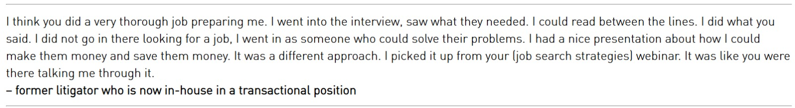
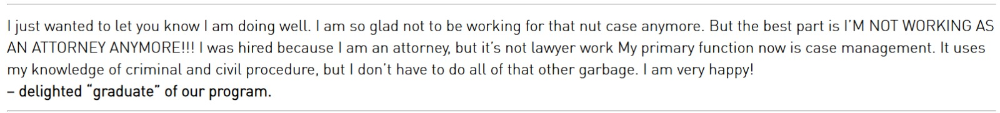
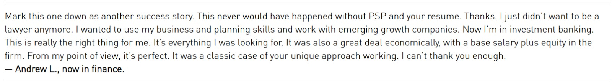
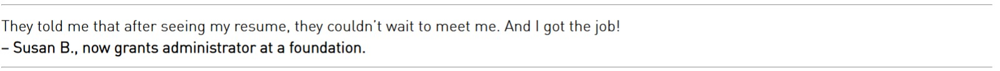

Lawyers! Thinking of leaving law? We can get you out.
There are days you hate being at the job. The salary makes it hard to leave.
- You’ve searched “jobs like lawyer” more times than you’d like to admit.
- You’re not sure what else you can do anyway. Private practice is more of the same.
- Job postings want experience you don’t have. You feel overqualified for some things, underqualified at the same time.
- Too expensive for nonprofits. Too specialized for general business. Too risk-averse to start your own thing.
- So you stay. Another year. Same billable hours. Same hustle for clients.
That’s the trap.
Why you have not left yet
You have spent years becoming a lawyer.
Law school. The nameplate on your desk. Your parents were proud. “My son’s a lawyer”.
Leaving feels like erasing all of it. Not just the career. The version of yourself everyone expected you to become.
You are still trying to justify a decision you made when you were 22 years old!
So you keep stumbling along, hoping that the right new job will somehow find you. And another year goes by.
There is a way out.
Bruce Blackwell, career coach for professionals, has spent 25+ years helping more than 2000 lawyers just like you switch into new careers that they love, whether elsewhere in law or in business.
30 years. One specialty.
Lawyers leaving law.
0
Attorneys transitioned into new careers since 1992. Some into industries they dreamed of at 22. Others into roles they never knew existed.
0
Years working exclusively with lawyers in transition.
0
Of clients matched or exceeded their law firm salary after the move.
0
Billable hours in their new roles. Still earning healthy six figures or more. That is what the other side looks like.
Lawyers earning $250K, $350K, $550K, and $850K+ have done this.
Some went into the industries they had wanted at 22, before someone talked them into law school. Others went into roles they dreamed of but never felt qualified for. Still others found careers they did not even know existed.
None of them regretted leaving. Not one client has come back saying they did not like a career track we had recommended.
Tell us where you are. We will tell you what is actually possible.
“A headhunter wants a round peg in a round hole. Bruce carves out a new shape for you.”
— Keith, former law firm partner, now a university administrator
What you are probably thinking
Every client walks in with one of these.
Wrong. Employers pay a premium for someone who can break down complex problems, anticipate the other side, and find answers when no one else can. Every attorney already does all three. Consultants have similar careers to lawyers, and employers pay for it just the same.
Wrong. We reframe what you already have for a new audience and bring you in at management, senior management, or C-level. Nearly every client matched or exceeded their salary.
Sure you can! You probably have 10–15 years in practice already, with 25–30 years still ahead. Three years in the past is not a reason to stay.
Jobs like lawyer or CPA come with brutal hours. Most of our clients were billing 1,800 to 2,400 hours per year. Our three-step Job Search System is designed for that.
Nearly all of it can be done off-hours. Some clients spent 10 minutes a day and transitioned in under six months.
Searching “jobs like lawyer” is the starting point, not a reason to wait. Identifying what you can do, what you want to do, what you can be hired to do and paid very well to do is what we do.
Three minutes. Tells you exactly where you stand.
Already want to talk? Book Your Free Call
What others like you are saying




For more testimonials go here
How we do it
Three steps. A specific outcome.
Figure out where you actually fit.
We start with the Personal Success Profile® — a process Bruce developed to surface real, actionable career options.
Not pie-in-the-sky things but jobs you can actually land and actually enjoy — similar careers to lawyers.
We run structured sessions to surface your achievements, the skills behind them, and which ones you actually enjoy using.
Then we map all of it to real jobs that pay what you want.
Build the case for hiring you.
A strategic document showing employers exactly how your skills solve the problems keeping them up at night.
Employers don’t buy what you’ve done. They buy what you can do for them. Our documents are forward-looking, not histories.
Run a search that actually works.
Most job searches fail because they chase posted roles and rely on recruiters, whether you’re in jobs like lawyer or consultant. Those are the last places companies look.
Our system focuses on where hiring happens before the ads go up, before recruiters get called.
Many clients land jobs that were created for them, built around their unique combination of legal and non-legal talents — proof that similar careers to lawyers exist in almost every industry.
We also map out your daily actions, so every hour you spend is moving something forward. We know what works and what doesn’t. We will put you light years ahead of other candidates who are chasing classifieds and relying on recruiters.
About Bruce Blackwell — The Founder
Bruce, a career coach for professionals, spent 20 years repositioning products in corporate America.
- Press Secretary for a US Congressman and Gubernatorial Candidate
- VP of Marketing at VCA Teletronics, the nation’s premiere television post-production facility
- Nationally syndicated columnist with Gannett, the country’s largest newspaper chain
- VP of Public Relations at MGM and Head of Corporate Communications at New Line Cinema — helped Moonstruck achieve 6 Oscar nominations and 3 awards.
- Associate Consultant at Marketing Corporation of America, advising Fortune 500 companies like IBM, GE and Pepsi
- VP of Marketing at BASYS — the tech company that invented newsroom automation for networks around the world including CNN, NBC and the BBC.
- Executive Director of a County Bar Association
- Executive Director & Board Member for an independent consumer advocacy group that works in cooperation with a state Attorney General’s Office
His entire career was one thing: taking something unfamiliar to an audience and making them see exactly why they needed it.
Since 1992, he has done that for lawyers.
Been named one of the 10 Best Career Coaches in New York City in 2026.
Shortlisted for nomination for ‘Top Alternative Careers Solutions 2026’ by ManageHR magazine.
Been called the “Dean of Career Counselors for Lawyers” by the New York State Bar Association.
Charter member of the New York City Bar Association’s career counseling panel…
Has presented at the NJ Bar Association, NY County Lawyers Association, Pace University School of Law, the NY State Bar Association, and the National Constitution Center in Philadelphia — where his presentation followed one by US Supreme Court Justice Stephen Breyer.
Been at the White House.
He is not an HR person. He is a marketer who applies that same logic to your career.
2,000 attorneys later, the process works. It can work for you.
You’ve been thinking about it for years.
The call is 30 minutes.
Book Your Free Call
We look at your background, your salary floor, and your timeline. You’ll speak with a career coach for professionals, not a junior associate.
We tell you exactly what the path out looks like for someone in your position.
No obligation after the call.
Not ready for a call yet? Start with the assessment. Takes 3 minutes.